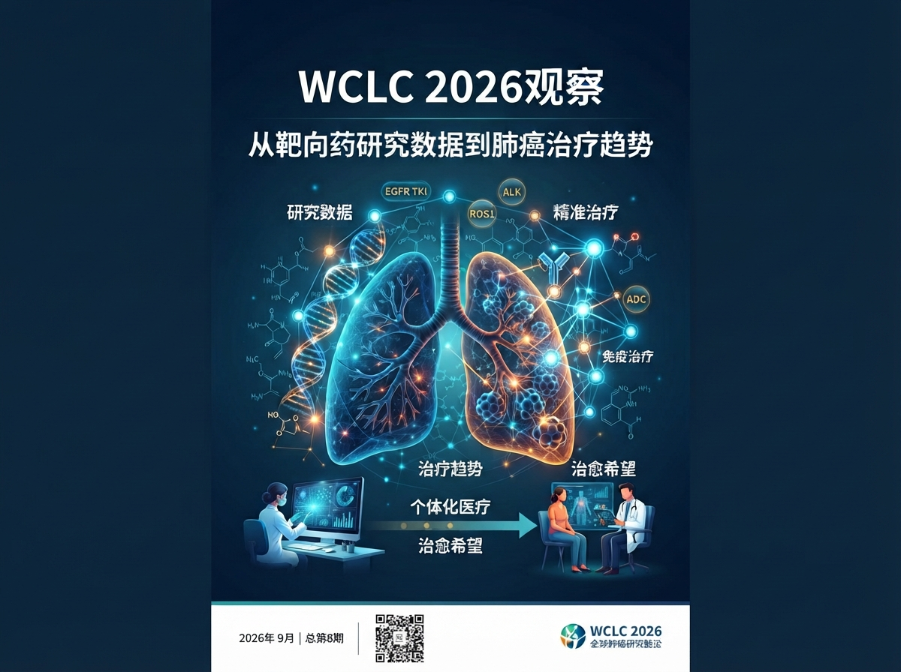

WCLC 2026靶向治疗总体观察与前沿趋势纵览
从经典EGFR到Exon 20：一线强化、围术期、耐药
从术后辅助到新一代TKI：治疗前移与长期控制
从“有效”走向CNS与耐药覆盖
HER2突变NSCLC进入ADC竞争时代
从G12C走向G12D及更广泛RAS靶向
ADC从新模式走向大规模临床竞争
MET、RET等前沿进展速递
精准治疗时代的临床决策思考与展望
II期NAUTIKA1研究（NCT04302025）首次公布的结果显示，对于可切除、早期KRAS G12C阳性非小细胞肺癌（NSCLC）患者，新一代口服KRAS G12C抑制剂divarasib用于新辅助治疗具有可控的安全性，并表现出初步良好的抗肿瘤活性。本次报告进一步更新该队列的数据。
纳入年龄≥18岁、分期为IB–IIIB期（T3N2除外）的KRAS G12C阳性NSCLC患者，接受divarasib 400 mg每日1次新辅助治疗8周，随后接受手术。术后根据PD-L1表达水平实施个体化辅助治疗。主要终点为新辅助divarasib治疗的安全性及可行性；次要终点包含主要病理缓解（MPR）、病理完全缓解（pCR）、影像学ORR及淋巴结降期等。
截至2026年2月9日，共20例患者入组。19例患者接受了手术切除，原发肿瘤均实现R0切除且无术中并发症。新辅助及辅助治疗期间常见不良事件为腹泻和恶心，多为1–2级且无患者因AE停药。疗效方面：MPR率为42%；pCR率为16%；影像学ORR为55%；临床降期率为40%；病理性淋巴结降期率为37%（降期至N0占32%）。
NAUTIKA1研究更新数据显示，divarasib单药用于可切除、早期KRAS G12C阳性NSCLC新辅助治疗具有可行性，安全性总体可控，并表现出良好的初步抗肿瘤活性。基于此结果，该药将在Krascendo 3 III期研究中进一步探索其在早期NSCLC中的治疗价值。